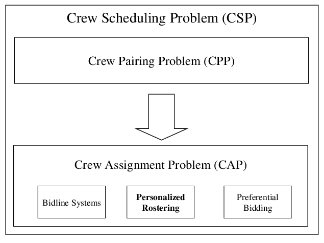

Project 01 · Cargo
Cargo Systems Upgrade
Conducted an in-depth business process analysis, uncovering bottlenecks and efficiency gaps across cargo operations. Collaborated with stakeholders from airline operations, IT, and external vendors to gather and document requirements, translating insights into detailed functional specifications to ensure the upgraded system would meet both business objectives and regulatory standards.
Facilitated workshops with cross-functional teams to ensure all stakeholders were aligned on project goals and expectations. This collaboration was essential to maintaining focus on the project's objectives and to encourage a shared vision across departments.
Played a central role in supporting the development of test plans for User Acceptance Testing (UAT), ensuring the upgraded system met user and compliance needs. Managed requirements traceability throughout the project lifecycle, meticulously tracking changes and ensuring accountability at every stage.
Analysed the operational impact of the new system and developed targeted training materials for end-users, providing hands-on support as teams adapted to the upgraded platform. Change impact assessments ensured a seamless go-live.
IATA compliant
Reduced operational downtime
Improved cargo tracking

Project 02 · Crew Operations
Crew Pairing & Rostering Integration
Conducted a comprehensive business process analysis to identify key improvement areas in crew operations and fleet management. Collaborated with stakeholders and SMEs to gather, document, and prioritise requirements captured in detailed functional specifications. Created RACI charts to clarify team responsibilities and maintained a risk register to proactively track and mitigate potential issues throughout the project.
Facilitated cross-functional workshops with Crew Ops, Fleet Management, and IT departments to foster a shared understanding of project objectives. Sessions were used to review and update RACI charts, capture risks in the risk register, and prioritise high-impact features to maximise project value.
Managed the product backlog using behaviour-driven development to ensure user stories and acceptance criteria were clear and aligned with business and technical requirements. Led change management processes using Confluence, Jira, and Asana to track progress and ensure smooth transitions between project phases.
Supported UAT plan development to validate that the integrated solution met business and technical requirements. Conducted network infrastructure audits to optimise system performance and ensure adherence to security best practices — confirming the integrated systems were scalable and secure for long-term use.
Crew efficiency optimised
Scalable integration
Cross-team collaboration